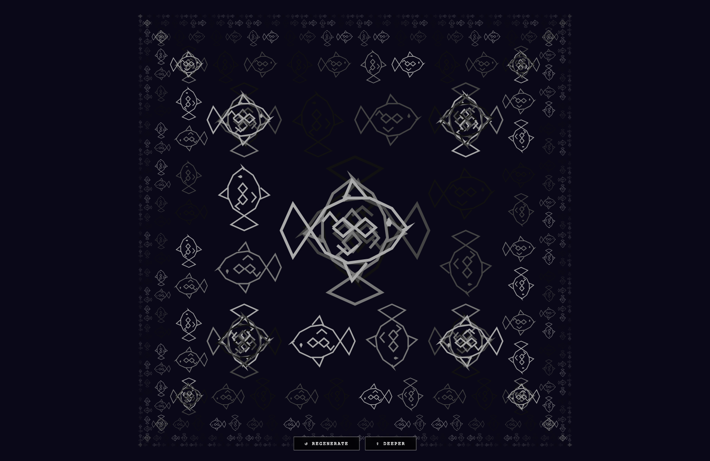

2026_exp/vis · square
Square Limit
2026_exp/vis/v54_square_limit.html
Square Limit — 2026_exp/vis; grouped under Fractals / Attractors / Recursion. Signals: canvas, fractals-attractors-recursion, square.
Upgrade notes: Strong math-family candidate; likely deserves grouped flavor navigation before insert formalization.